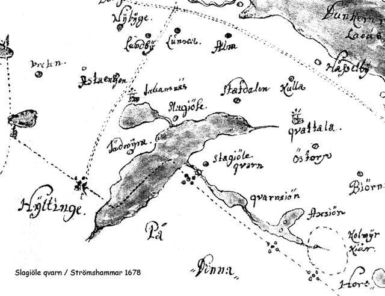

Lite historik om Strömshammar
Långt innan vårt fritidsområde var påtänkt fanns människor som bodde här och fann sin försörjning. I en hage där vi nu passerar Henaren fanns torpet Anderslunda och i gärdeshörnet mitt emot tomt 114 torpet Perslunda. Här kan man ännu se var jordkällaren fanns. Ett annat torp fanns i sluttningen vid fårhagen mellan Strömshammar och Henaren strax utanför vårt områdes gräns. Det torpet hette Sjölund och grundstenar och rester av jordkällare kan ännu ses.
Vårt område har inte alltid hetat Strömshammar. Troligen i mitten av 1600-talet byggdes här en kvarn som då tillhörde gården Slaggölet på andra sidan Henaren. En karta över Dunkers socken 1678 visar en kvarnsymbol och namnet Slagiöls Qvarn i bäcken från Kvarnsjön. Ett hundratal meter från sjöns utlopp kan man se en stenbro och där finns rester av en gammal dammvall. På en skifteskarta från 1777-78 finns dammen utritad. För att driva kvarnen var man tvungen att spara vatten i sjön och sedan släppa på när säd skulle malas. När man går runt Kvarnsjön kan man på vissa håll se att strandlinjen tidigare har varit ungefär en meter högre upp än vad den är idag. På kartan ser man också att sjön då gick ända fram till stenbron och ända fram där vårt äldsta pumphus nu ligger. 1831 fick en färgarfabrikör Kastman kontrakt på att han fick bygga en ”wallmarstamp” i Slaggiöleqvarn. Kastman bodde i Malmköping där han drev en färgargård och hade behov att färga garner och tyger. Han byggde alltså en Vadmalsstamp vid kvarnbyggnaden där han bearbetade vadmalstyger. För att driva stampen gick det åt vattenkraft som togs ur bäcken på samma sätt som till kvarnen. 1868 kom en ny ägare till Slaggiöleqvarn från Arboga. Han hette Carl-Erik Svanström och kallades manufakturmästare. Då hade också uppförts en större manbyggnad och en ekonomibyggnad. I ett uppslagsverk nämns Slagiöls qvarn och vadmalsstamp. En karta från 1865 visar att här fanns tio byggnader varav fem stycken låg i direkt anslutning till bäcken.
Under senare hälften av 1800-talet börjar ett nytt namn användas i kyrkböcker och husförhörslängder parallellt med Slagiöls stamp, nämligen Strömshammar. Det tyder på att nu har också en hammare eller smedja byggts. Från 1877 anges i Södermanlands läns kalender att bland Dunkers industrier finns Strömshammars manufaktursmide. Enligt en muntlig källa, vidareberättad i ett par generationer, har stångjärn forslats hit från Stålboga stångjärnssmedja på vinterns sjöisar och sedan förädlats till bl.a. spik och jordbruksredskap.
Ungefär vid förra sekelskiftet börjar ”industriepoken” att försvinna och Strömshammar övergår till att bli ett mindre jordbruk. En del av Strömshammar där tomterna 48 till 59 nu finns, avstyckas och blir fastigheten Eriksdal men denna överlever bara under 15 år och återgår sedan till Strömshammar.Så fortsätter Strömshammar att brukas under olika ägare och arrendatorer och i mitten av 1900-talet är ägaren en greve Mammerheim vid Altnäs gård. Han säljer marken till Stockholm med Omnejd AB (SMO) som påbörjar exploateringen. Under slutet av 1960-talet sker fältarbete och kartering och lantmäteriförrättning slutförs 1970. I maj detta år börjar de första tomterna säljas. En lokal försäljare sitter vid ett campingbord där vår gula postlåda nu finns. Han bokar preliminärintresse och tar handpenning med 100 kr. Intresset verkar stort och ganska snart har ett nybyggarsamhälle uppstått.
1971 bildades Strömshammars Vägförening med uppgift att ha kontakt med SMO och på sikt övertar områdets vägar, vattenanläggning, badplatser, grönområden o.s.v. 1975 övertog föreningen området från SMO och fick lagfart på stamfastigheten. Vattenanläggningen slutbesiktigades och övertogs 1976. Under följande år har ytterligare ett vattenverk byggts, vägar förbättrats, badplatser och bryggor underhållits, viss avverkning av skog har utförts m.m. Vi har nu i vårt område stora möjligheter till avkoppling och rekreation. T.ex. på vår lilla festplats med fotbollplan och boulebana eller vid badplatserna. Vi kan gå markerade stigar, vandra på Sörmlandsleden till Malmköping eller Ösjön med vindskydd och grillplats och vi kan plocka bär och svamp. På vintern kan vi åka skridskor eller skidor, spår brukar finnas om det är gott om snö. Ett mysigt område och härliga omgivningar, det har du säkert upptäckt.
Vill du veta ännu mera kan du kontakta tomt 58 Göran Bayard